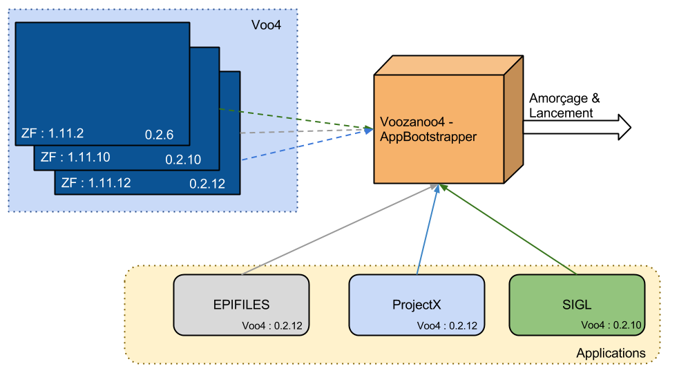

Amorçage d’une application Voozanoo4¶
Principe de fonctionnement¶
Afin de faciliter le déploiement sur les serveurs et pour éviter les éternels conflits du fichier index.php en charge :
- de définir les constantes necéssaires au paramétrage / fonctionnement de l’application
- d’amorcer l’application (bootstrap)
- de démarrer l’application (run)
Il a été décidé d’externaliser cette logique dans un composant externe, la classe Voo4_AppBootstrapper et ce :
- pour simplier le contenu du fichier index.php, et éviter des conflits
- pour permettre l’amorçage de l’application dans le cas de l’utilisation de Cron
- pour centraliser les besoins d’une Application Voo4 en cas d’évolution relative à l’amorçage des App Voo4
Le fichier index.php se résumera donc à :
- inclure le fichier du composant d’amorçage (
Voo4_AppBootstrapper) - lancer l’application via le composant d’amorçage
Le composant Voo4_AppBootstrapper s’occupe de déduire la version de Voozanoo4 et du ZendFramework à utiliser en fonction des fichiers APPINFOS présents coté Application et Noyau.
NOTE : todo - Lier la documentation de JP du fichier APPINFOS ici
Pré-requis¶
Le fonctionnement correct de ce composant et la mise en place de cette logique impose :
- Le cloisonement des Noyaux Voozanoo4 dans un répertoire portant un numéro de version précis (Ex: 0.2.6, 0.2.12, trunk)
- Le cloisonement des versions de la librarie ZendFramework (Ex: 1.11.10, 1.11.12)
- L’utilisation d’un prepend ou la définition de certaines variables en tant que variable d’environnement (au niveau du VHost)
L’idéal étant d’avoir une structure de ce type :
apps/
projectx/
neodemat/
neonat_labo/
libs/
voozanoo4/
trunk/
0.2.10/
0.2.12/
2.14/
ZendFramework/
1.11.10/
1.11.12/
Note
Depuis Novembre 2013 la version 0.2.14 de Voozanoo4 est désormais renommée en 2.14, il sera de même pour les futures versions
(2.15, 2.16, ...).
Cette modification permet la sortie de “mise à jour” de version majeures sous la forme de release (2.14.01, 2.14.02, ...).
Pour définir une variable d’environnement au niveau du VHost :
<VirtualHost *:8080>
SetEnv VARIABLE_NAME "variable_value"
</VirtualHost>
Coté PHP elle pourra être récupérée via :
<?php
getenv('VARIABLE_NAME');
Mise en place¶
La mise en place du composant d’amorçage au sein d’une application se décompose en 3 étapes :
- Configurer les constantes / variables d’environnement
- Configurer le fichier APPINFOS au sein de l’application
- Mettre en place le nouveau fichier
index.php
Configuration des Constantes / Variables d’environnement¶
Le composant Voo4_AppBootstrapper utilise en priorité les constantes si définies, sinon il utilisera la variable d’environnement du même nom pour définir lui même la constante.
Ce comportement permet de s’affranchir d’un fichier prepend.
Les constantes requises sont :
PATH_VOO4_CORE: Chemin vers le répertoire “src” du noyau Voozanoo4 en utilisant un%squi sera remplacé par le numéro de version de Voo4- Exemple :
C:\Program Files (x86)\Zend\Apache2\htdocs\libs\voozanoo4\%s\src
- Exemple :
PATH_VOO4_EXTLIB: Chemin vers le répertoire “libs” du noyau Voozanoo4 en utilisant un%squi sera remplacé par le numéro de version de Voo4- Exemple :
C:\Program Files (x86)\Zend\Apache2\htdocs\libs\voozanoo4\%s\libs
- Exemple :
PATH_FARM: Chemin vers le répertoire contenant l’ensemble des configuration des applications (rangées dans un sous-répertoireconfiguration)- Exemple :
C:\Program Files (x86)\Zend\Apache2\htdocs\workdata
- Exemple :
PATH_ZF: Chemin vers le répertoire contenant les différentes versions du ZendFrameworkExemple :
C:\Program Files (x86)\Zend\Apache2\htdocs\libs\ZendFramework
VOO4_APPBOOTSTRAPPER: Chemin d’accès au fichier PHP contenant la classe Voo4_AppBootstrapper à utiliserExemple :
C:\Program Files (x86)\Zend\Apache2\htdocs\Voo4_AppBootstrapper.php
Configuration du fichier APPINFOS¶
Par défaut le composant d’amorçage tentera de trouver un fichier APPINFOS dans : <APPLICATION_PATH>/configs/.
Note
APPLICATION_PATH pointe normalement le répertoire contenant l’intégralité de l’application (c. à d. contenant les répertoires modules/, controllers/, public/ etc...).
C’est ce chemin qui est fourni en premier argument de Voo4_AppBootstrapper::runApplication() ou Voo4_AppBootstrapper::bootstrapApplication()
Ce fichier doit avant tout contenir l’information concernant la dépendance à Voozanoo4 :
{
"DEPENDENCIES":{
"VOOZANOO4": "0.2.12"
}
}
Note
Ce fichier étant versionné il doit toujours contenir le necessaire au déploiement / fonctionnement de l’application / du noyau sur nos serveurs.
Si vous avez besoin de modifier une valeur uniquement dans le cadre de l’installation locale que vous avez effectuée consultez la rubrique Utiliser des fichiers APPINFOS proprent à l’environnement de Dev.
Mise en place du Composant Voo4_AppBootstrapper¶
L’idéal est que votre configuration Apache indique par application le composant d’amorçage à utiliser. Celui-ci étant très récent, les évolutions du composant induisent parfois
un non rétro-compatibilité entre le composant “en v0.2.13 et en v2.14”.
Exemple :
<VirtualHost *:8080>
SetEnv PATH_VOO4_CORE "C:\Program Files (x86)\Zend\Apache2\htdocs\libs\voozanoo4\%s\src"
SetEnv PATH_VOO4_EXTLIB "C:\Program Files (x86)\Zend\Apache2\htdocs\libs\voozanoo4\%s\libs"
SetEnv PATH_FARM "C:\Program Files (x86)\Zend\Apache2\htdocs\workdata"
SetEnv PATH_ZF "C:\Program Files (x86)\Zend\Apache2\htdocs\libs\ZendFramework"
<Directory "C:\Program Files (x86)\Zend\Apache2\htdocs\apps\projectx\public">
AllowOverride None
SetEnv APPLICATION_ENV dev_gsa
SetEnv VOO4_APPBOOTSTRAPPER "C:/Program Files (x86)/Zend/Apache2/htdocs/libs/voozanoo4/2.14/Voo4_AppBootstrapper.php"
RewriteEngine On
# Rule necessaire dans le cas d'utilisation d'Apache en Fast CGI pour l'authent HTTP visible depuis PHP
RewriteRule .* - [E=HTTP_AUTHORIZATION:%{HTTP:Authorization}]
RewriteCond %{REQUEST_FILENAME} -s [OR]
RewriteCond %{REQUEST_FILENAME} -l [OR]
RewriteCond %{REQUEST_FILENAME} -d
RewriteRule ^.*$ - [NC,L]
RewriteRule ^.*$ index.php [NC,L]
</Directory>
</VirtualHost>
Chaque application pourra ainsi référencer son Bootstrapper à utiliser. Le déployeur de Core Voo4 intègrera très bientot ce comportement lors du déploiement des noyaux voo4.
Note
Le fichier Voo4_AppBootstrapper.php intègre le mot-clé SVN LastChangedRevision. Cela permet d’indiquer dans le fichier (sans intervention du développeur) la dernière version étant
liée à la modification du composant d’amorçage.
Dans le cas où vous auriez extériorisé le composant d’amorçage il sera plus facile de comparer ces LastChangedRevision pour vérifier si votre composant est à jour.
<?php
/**
*
* $LastChangedRevision: 2251 $
*
* @copyright Copyright (c) 2013 Epiconcept (http://www.epiconcept.fr)
*/
class Voo4_AppBootstrapper
{
// ....
}
Fichier index.php¶
<?php
//Permet de récupérer la Variable d'Environnement si jamais la constante n'est pas définie depuis un éventuel prepend
defined('VOO4_APPBOOTSTRAPPER') || define( 'VOO4_APPBOOTSTRAPPER', getenv('VOO4_APPBOOTSTRAPPER') ? getenv('VOO4_APPBOOTSTRAPPER') : null);
//Inclusion du composant d'armoçage
require_once( VOO4_APPBOOTSTRAPPER );
//Lancement de l'application en spécifiant l'application_path
//le fichier index.php se trouvant dans foo/public/index.php on doit indiquer que l'application_path est foo/, d'où le '/..'
Voo4_AppBootstrapper::runApplication( __DIR__ . '/..');
Amorçage pour un Cron¶
Un des avantages à utiliser l’amorçage d’application via le composant Voo4_AppBootstrapper reside dans la possibilité de l’utiliser pour amorcer l’application lors de l’utilisation des Cron.
Le script exécuté pour le cron ressemble au script index.php hormis le fait qu’il de lance pas l’application (run), il l’amorce uniquement (bootstrap) :
<?php
//Permet de récupérer la Variable d'Environnement si jamais la constante n'est pas définie depuis un éventuel prepend
defined('VOO4_APPBOOTSTRAPPER') || define( 'VOO4_APPBOOTSTRAPPER', getenv('VOO4_APPBOOTSTRAPPER') ? getenv('VOO4_APPBOOTSTRAPPER') : null);
//Inclusion du composant d'armoçage
require_once( VOO4_APPBOOTSTRAPPER );
//Amorçage de l'application en spécifiant l'application_path
//le fichier cron.php se trouvant (par exemple) dans foo/scripts/cron/cron.php on doit indiquer que l'application_path est foo/, d'où le '/../..'
Voo4_AppBootstrapper::bootstrapApplication( __DIR__ . '/../..');
//Important : Un application Voozanoo4 se basant principalement sur un projet particulier il est souvent utile de le forcer ici
//étant impossible à déterminer "via l'url" vu qu'il s'agit d'un cron :
Zend_Registry::set( Core_Library_Account::PROJECT_VAR_NAME, 'projectName' );
//On peut maintenant utiliser les classes proprent au Noyau Voozanoo4 et proprend à l'application
Warning
Dans un context CLI (cron) les Variables d’Environnement restent possibles, mais ne sont plus définies via la VHost (Apache) vu qu’on accède au script via CLI.
Voir la rubrique Variables d’environnement dans un context CLI pour plus d’informations.
Astuces¶
Utiliser des fichiers APPINFOS proprent à l’environnement de Dev¶
Les fichiers APPINFOS des applications indiqueront le plus fréquement une version précise du noyau à utiliser (Ex: 2.14).
Lors du développement de l’application vous aurez peut-être besoin de brancher votre Application sur la version trunk du noyau Voo4. Cette modification s’effectue ainsi :
- Il faut extérioriser le composant d’amorçage en le sortant du Core Voo4
Hint
Prévoir un répertoire
Voo4_AppBootstrapperscontennant les “Bootstrappers” :C:/Program Files (x86)/Zend/Apache2/htdocs/libs/Voo4_AppBootstrappers/ trunk/ Voo4_AppBootstrapper.php 2.14/ Voo4_AppBootstrapper.php 2.15/ Voo4_AppBootstrapper.php
- Modifier la conf Apache pour indiquer où chercher le bon composant pour l’application ciblée
<VirtualHost *:8080> # ... <Directory "C:\Program Files (x86)\Zend\Apache2\htdocs\apps\projectx\public"> # ... SetEnv VOO4_APPBOOTSTRAPPER "C:/Program Files (x86)/Zend/Apache2/htdocs/libs/Voo4_AppBootstrappers/2.14/Voo4_AppBootstrapper.php" # ... </Directory> # ... </VirtualHost>
Dupliquer le fichier
APPINFOSde l’application en le renommantAPPINFOS.xxx(xxx = gsa, rhe, glv etc)Modifier la dépendance au Core Voo4 dans le nouveau fichier
APPINFOS.xxxModifier la constante
Voo4_AppBootstrapper::APP_APPINFOS_FILENAMEdu composant fraichement copié pour indiquer le nouveau fichierAPPINFOS.xxx
Ce procédé est à répéter si vous désirez également surcharger une dépendance de Voozanoo4 (ZendFramework par exemple).
C’est le fichier APPINFOS coté Core qui sera manipulé (src/configs/). La constante liée est Voo4_AppBootstrapper::CORE_APPINFOS_FILENAME.
Warning
Surtout ne pas oublier de mettre manuellement à jour votre composant d’amorçage si vous voyez un commit passé indiquant qu’il à été altéré ou dans le ChangeLog du noyau.
En cas de comportement bizarre de votre application (amorçage qui cafouille, soucis de dépendances etc...) vérifier immédiatement le fameux keyword SVN LastChangedRevision.
Variables d’environnement dans un context CLI¶
Sur Windows 7 (lors du développement local) : Démarrer > Panneau de configuration > Système > Paramètres système avancés > Bouton “Variables d’environnement...”.
On peut alors ajouter X variables d’environnements (celles qui avait été définies dans le VHost)
Sur Linux :
- Directement au lancement de la commande php
foo=bar baz=42 php /path/to/cron/cron.php
- En ayant explicitement appelé
exportpréalablement sur le serveur export foo=bar export baz=42
php /path/to/cron/cron.php
- En ayant explicitement appelé